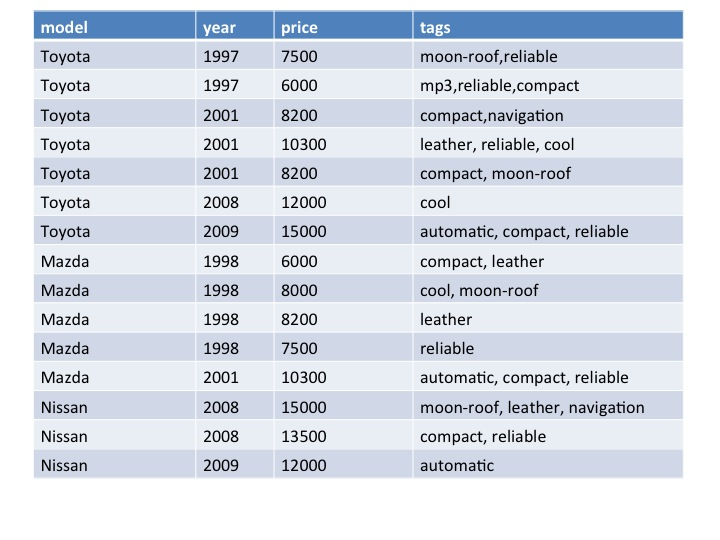
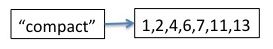
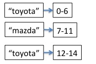
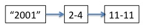
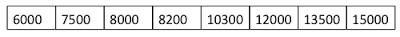
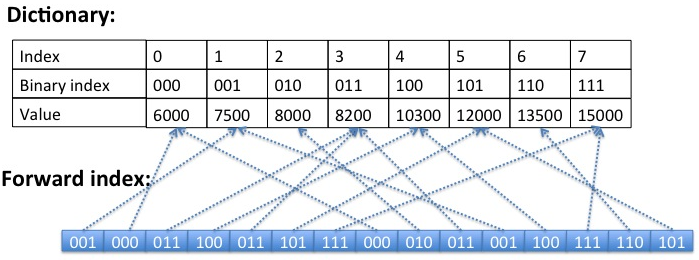

How it works.
Lets consider how indexing works on the following example:

This set of documents is primary sorted by 'model' and secondary sorted by 'year'
In SenseiBA we have two types of indexes:
As for the inverted index it stores the sorted list of document ids per value. Here is the fragment of the inverted index per 'tags:compact' value

The problem is that each documentId is int value requiring 4 bytes to be stored. There are algorithms to compress the inverted index such as P4Delta , but at maximum they would give 2-3x compression. If the column is sorted, inverted index would take much less space:

For each value we store the range, requiring only 8 bytes per value.
Even if the column is secondary sorted, we still could leverage this approach:

We have two sorted regions for the column year. For each region it would take 8 bytes to store the range of docIds per value.
As for the inverted index, we create one only if the column is either primary sorted or secondary sorted. That's why it is essential to sort the data by the columns that are likely to present as filters. This sorting usually happens in Hadoop. It's better to avoid columns that are sorted and unique at the same time,as this column would impose big memory overhead
We create the forward index for all the columns that are not sorted. This type of index requires the full scan, but it simplifies facet counting and aggregations. First the Dictionary is created. It is essentially the sorted array containing all the unique values per column. Here is the dictionary for the 'price' column:

After creating the dictionary we are ready to build the forward index. It's just another array that contains references to positions in the dictionary. Dictionary size gives us the number of bits required to reference the dictionary value in the forward index array. Here is the forward index for 'price' column:

Each document requires only 3 bits to store the price value. We use the ByteBuffer class to store the forward index. This gives us the flexibility of where the index is stored:
'tags' is the multi value column. The datastructure that we use to store multi columns is similar to previosuly described forward index. But we store additional one bit per value to know if the value belongs to a new document. Multi value index also requires the skip list as we might have variable length of values per doc.
Here is the presentation about how different types of indexes are working inside SenseiBA http://www.slideshare.net/VolodymyrZhabiuk/index-types